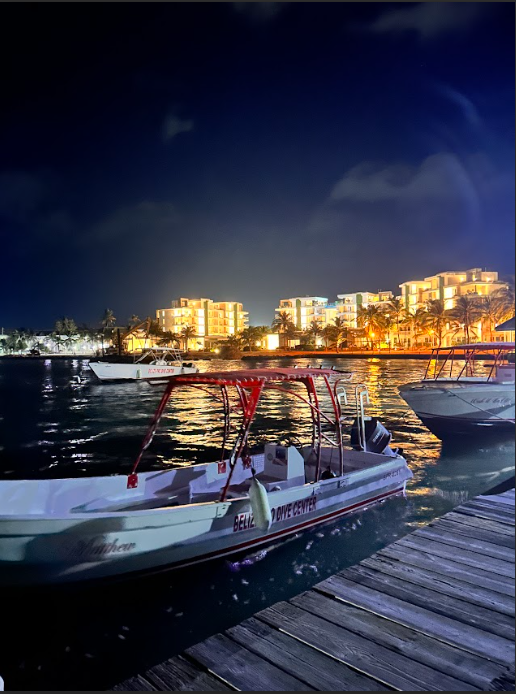
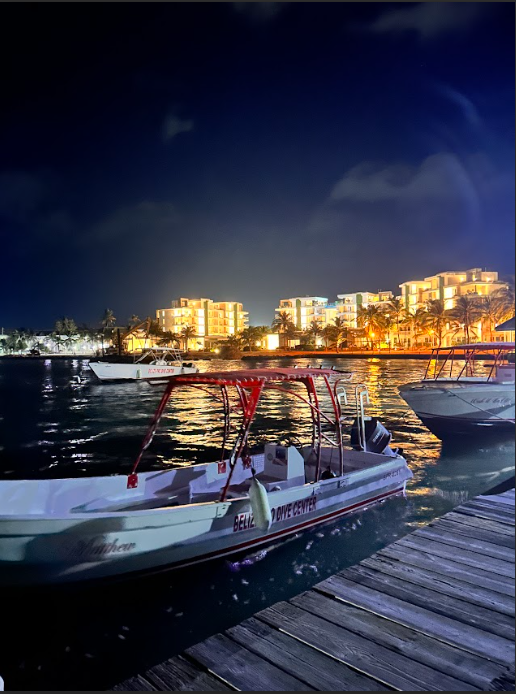
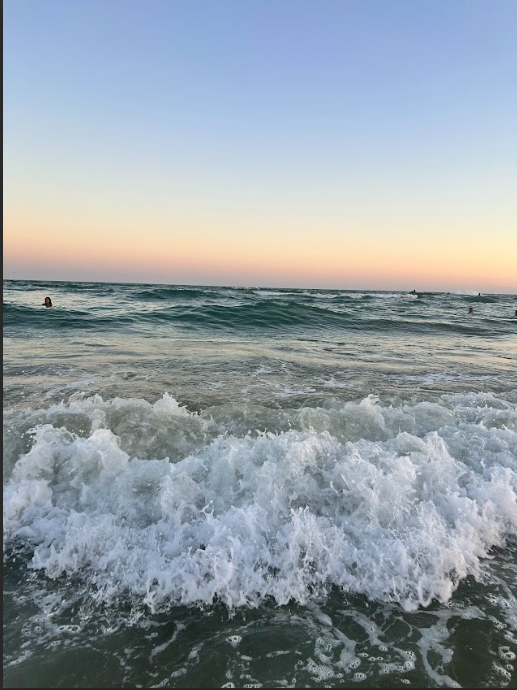
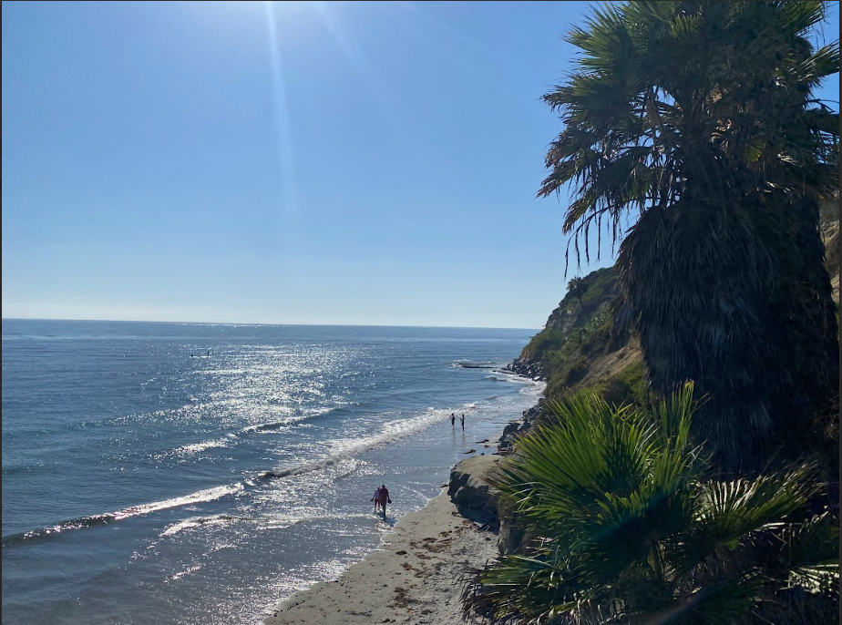

What — The Hobby
I love exploring new places—collecting moments, cultures, and views through photos and short travel notes. This page is a living scrapbook of trips and the practical tips I’ve learned along the way.
- Trip notes to help friends reuse itineraries
- Budget-friendly flight and stay ideas
- Walkable routes and must-try food spots
 

Who — About Me
I’m Tranyce Lester, and traveling has been a part of my life for as long as I can remember. Both of my parents served in the Army and were stationed in Fort Bragg, so I grew up moving often and spending time in places like New Jersey and Arizona. I was always excited to experience a new environment—sometimes the journey itself was my favorite part, whether it was a long drive or a flight across the country. In recent years, I’ve had the opportunity to travel abroad, which deepened my love for exploring different cultures and perspectives. I’m now a Computer Science student concentrating in Human–Computer Interaction, with aspirations to build a career in UX/UI design. My goal is to combine my passion for travel and my eye for user-centered design into experiences that connect people across places and cultures.
When — Best Times / Schedule
These are approximate windows I found most comfortable or affordable for each place.
| Destination | Good Window | Notes |
|---|---|---|
| San Pedro, Belize | Late Spring–Summer | Warm waters; plan for sun + occasional showers. |
| Puerto Rico | Late Spring / Early Fall | Shoulder seasons = better prices; watch hurricane forecasts. |
| Grand Canyon | Late Fall | Cooler temps; fewer crowds in December. |
| San Francisco | Early Fall | Less fog; bring layers. |
| Mexico (varies) | Late Spring–Summer | Beach destinations are lively; hydrate and use SPF. |
Always check current conditions and local calendars for festivals or closures.


Where — Favorite Locations
A few memorable stops I’d revisit and recommend:
How — Planning & Tips
My Process
- Pick 3–5 anchor spots; save to offline maps
- Book stays near transit or walkable hubs
- Pack light + bring a day bag for photos/snacks
Quick Tips
- Sunrise = empty landmarks + soft light
- Ask locals for one food rec each day
- Carry cash for small vendors
Why — What Travel Gives Me
Travel gives me perspective, creativity for my design work, and a chance to document places with an HCI lens.
- Meeting people and learning customs opens up empathy for design.
- Photography helps me notice patterns, colors, and textures I can reuse in UI.
- Planning builds systems thinking I use in code and projects.
AI Prompts / Attributions
All the images featured on this site are my own personal photos taken during my travels to places like Belize, Puerto Rico, Mexico, San Francisco, and the Grand Canyon. No AI-generated imagery was used. However, I used AI assistance for my CSS development process to help me plan and refine the site’s visual style and accessibility.
Specifically, I worked with ChatGPT (GPT-5) to help me write cleaner,
responsive CSS and ensure alignment with accessibility and CRAP design principles
(Contrast, Repetition, Alignment, Proximity).
I also used Coolors.co to help curate my pastel mint and green color palette,
which I then refined with ChatGPT to create properly named and accessible CSS variables inside my
:root section:
:root{
--bg: #cee7e6;
--panel: #f4fbfa;
--card: #ffffff;
--ink: #1f2b2a;
--muted: #51625d;
--line: #bfc0c0;
--primary: #648767;
--accent: #7dc95e;
--accent2: #7cdf64;
--heading: #2f5a37;
--shadow: rgba(0,0,0,.08);
--radius: 16px;
--maxw: 900px;
--s-1: .25rem; --s-2: .5rem; --s-3: .75rem; --s-4: 1rem;
--s-5: 1.25rem; --s-6: 1.5rem; --s-7: 2rem;
}I also used ChatGPT to help me:
- Optimize layout spacing and typography for better proximity and alignment.
- Ensure hover/focus styles followed accessibility best practices instead of removing outlines.